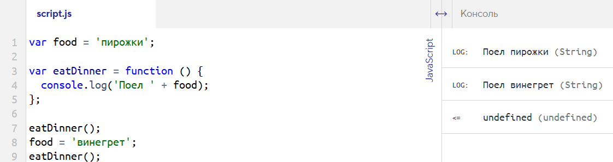

Из-за того, что переменные ищутся изнутри наружу, снаружи можно переопределять переменные, которые используются внутри функции.
Представьте, что вы школьник и, наконец-то, настало время обеда. Вы идёте в столовую. Сегодня на обед котлеты. И не с макарошками, а с пюрешкой! Вы обедаете и идёте учиться дальше. Много уроков, продлёнка, и вот уже время ужина. Вы снова идёте в столовую, а там закончились котлеты, поэтому на ужин сельдерей. И вы ужинаете сельдереем, деваться некуда. Воспроизведём этот пример в коде.
var food = 'котлеты с пюрешкой';
var eatDinner = function () {
console.log('Поел ' + food);
};
eatDinner();
// Выведет: Поел котлеты с пюрешкой
// Переопределяем переменную food
food = 'сельдерей';
eatDinner();
// Выведет: Поел сельдерейСначала значение глобальной переменной food было 'котлеты с пюрешкой'. Мы вызвали функцию и она использовала это значение, потому что оно было актуально на тот момент. Затем значение food изменилось на 'сельдерей'. С этого места в коде и ниже, старого значения переменной больше нет. Поэтому, когда мы вызвали функцию после переопределения переменной, функция использовала новое значение.
var food = 'пирожки';
var eatDinner = function () {
console.log('Поел ' + food);
};
eatDinner();
food = 'винегрет';
eatDinner();
